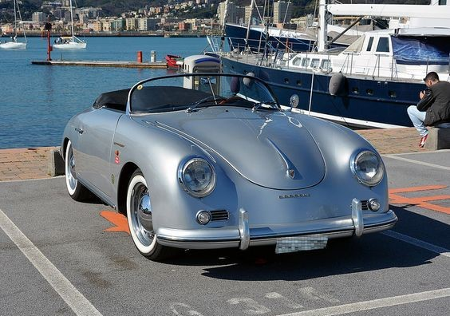

Porsche 911 GT3
The Porsche 911 GT3 RS is a high-performance sports car with increased race track performance.
Read More..
Porsche Taycan
The Porsche Taycan is an all-electric sports sedan with a range of models, including the Taycan, Taycan 4S, Taycan Turbo, and Taycan Turbo S.
Read More..

Porsche 356
The Porsche 356 is a legendary sports car that holds a significant place in automotive history.
Read More..
Porsche Spyder
The Porsche 918 Spyder is a groundbreaking hypercar that represents the pinnacle of Porsche's engineering and technology.
Read More..